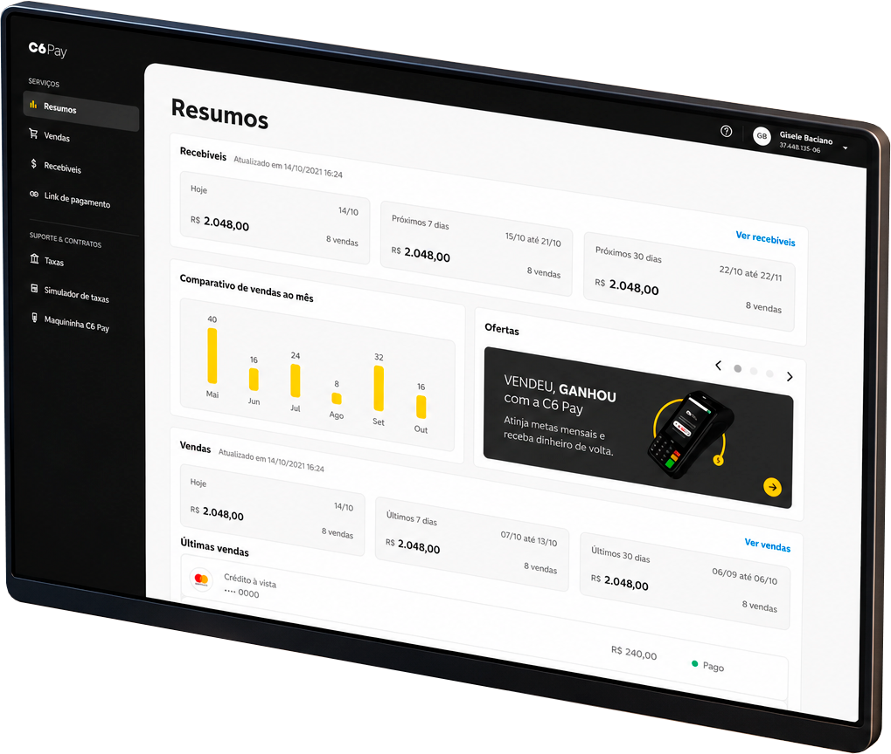
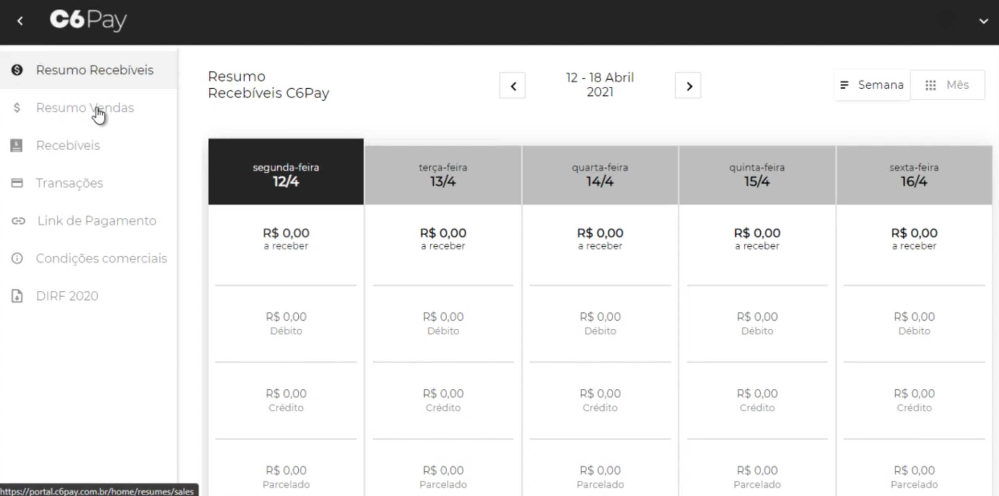
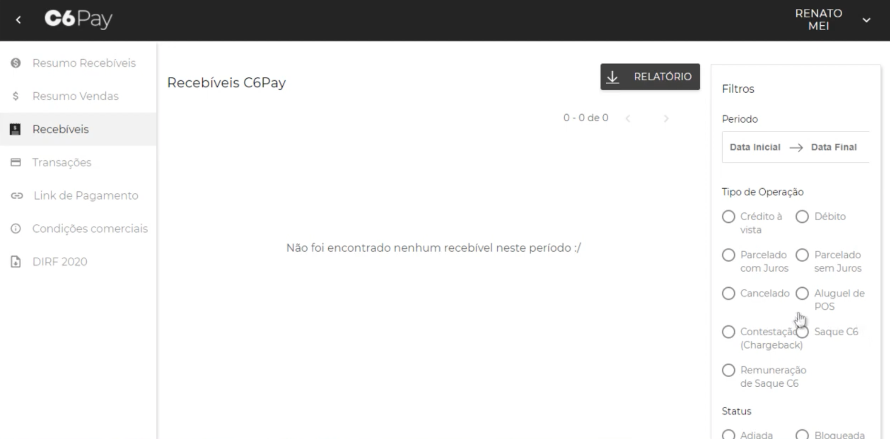
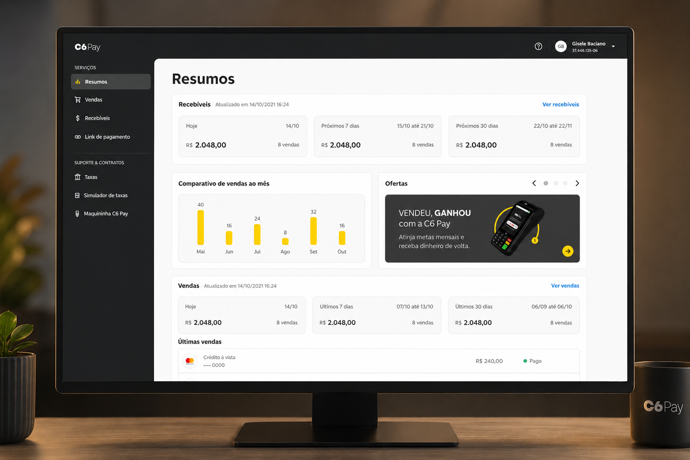
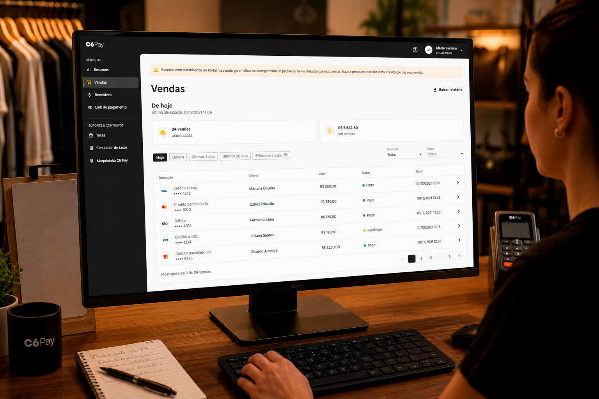

PayGo · C6 Bank · 2020–2021
Management portal for C6 Pay merchants
The C6 Pay management portal still carried the structure and language of PayGo, built before the C6 Bank integration. The redesign reorganized the navigation and information presentation to make it easier for merchants to monitor their financial performance within the bank's new ecosystem.

A B2B operation between PayGo and C6 Bank
With the integration between PayGo and C6 Bank, there was a need to align the portal experience with the bank's standards and prepare the platform for its evolution. Beyond the visual modernization, the product had accumulated usability, navigation, and communication issues that impacted merchants' essential tasks and increased support demand.


User experience
- Unintuitive navigation
- Confusing information architecture
- Low priority given to financial information
- Excessive cognitive load on screens
- Long flows for recurring tasks
Business impact
- High volume of operational questions
- Frequent dependence on support
- Poor task completion efficiency
- Inconsistency with C6 Bank standards
- Weak foundation for product growth
Scoping What Was Possible with Engineering
Since the team was small, we had daily contact with engineering. I leveraged this proximity to understand how data reached the portal, what the legacy system's limitations were, and, together with the PM, define what really made sense to improve in this first phase. From these conversations, we prioritized two focus areas for the redesign.

Helping with daily cash close
By analyzing support tickets, I identified that most questions arose during the cash close. Merchants had difficulty locating and interpreting financial information in the portal. This became the main problem of the project.
Prioritizing what really mattered
In the merchant's day-to-day operations, they needed to quickly know their financial position for that day. I reorganized the interface to give visibility to essential information and make this response immediate, without relying on tables and filters.
Transforming data into a clear financial view
With priorities defined, I reorganized the interface to make it easier to read financial information day to day. The solution replaced extensive tables with a more visual structure, reducing the need to interpret technical data to track the cash close.
Financial summary
I replaced the rigid weekly calendar of the legacy system with consolidated cards showing the main financial indicators, allowing merchants to see the total balance without manually totaling up each day's columns.
Information organization
I organized the interface to reflect the merchant's routine. Receivables were highlighted at the top of the screen, providing a view of incoming money, while the day's sales remained just below to support the cash close.
Language tailored to daily operations
I revised the organization of menus, filters, and messages to make navigation more intuitive. Communication was adjusted to prioritize the merchant's operational context, with clearer periods, states, and feedback throughout the experience.
A clear view of the financial operation
The portal had two distinct financial summary areas that presented complementary information, but required navigation between screens to compose a complete picture. With support from the CX team, I mapped the most frequent merchant questions during cash close and consolidated this information into a single view, prioritizing the most relevant indicators for daily C6 terminal operation.
I reorganized the interface to better use the available space, reduce repetitive elements, and highlight only the information needed for the cash close. With this, merchants were able to quickly check their financial position on the first screen, reducing the need to browse different sections of the portal.

Streamlining the cash close
Analysis of support tickets showed that many merchants used the sales history to review the daily operation. The challenge was to reduce the time spent on this review and make it easier to identify discrepancies between transactions.
To achieve this, I reorganized the experience by prioritizing the most frequent queries, with quick filters by period and refinements by status and operation type. I also made each transaction's status more explicit and added a "last updated" timestamp for the data, providing more confidence during cash close validation.

How we grounded design decisions
The redesign was not based solely on analysis of the existing interface. Throughout the project, I gathered different perspectives to better understand the problem, validate hypotheses, and align decisions with the rest of the team.
CX
Close work with the customer service team to understand the merchant profile, the most recurring questions, and the main reasons for contacting support.
Engineering
Mapping the legacy system's operation to understand technical limitations, data availability, and what could be resolved in the interface or would require back-end changes.
Competitor analysis
Analysis of products like Stone, Stripe, and PagSeguro to understand how the market organizes financial information and build a reference base for design decisions.
User testing
Prototype validation with five merchants to verify that the main decisions actually facilitated their operation before development.
Fewer Support Requests and Greater Development Autonomy
After the portal went into production, cash close questions virtually disappeared from support. To understand whether the change also showed up in user behavior, I analyzed GA with the PO. Average time on the sales screen dropped by almost half and access to reports increased. In parallel, we adapted the C6 Bank design system components to PayGo's technical limitations and built our own component library so the team could iterate on the product more consistently.